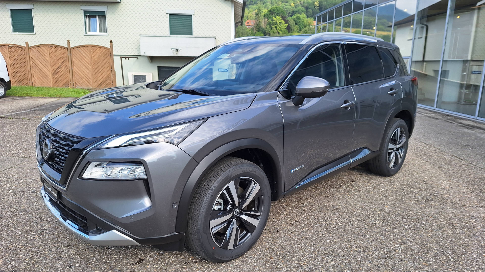
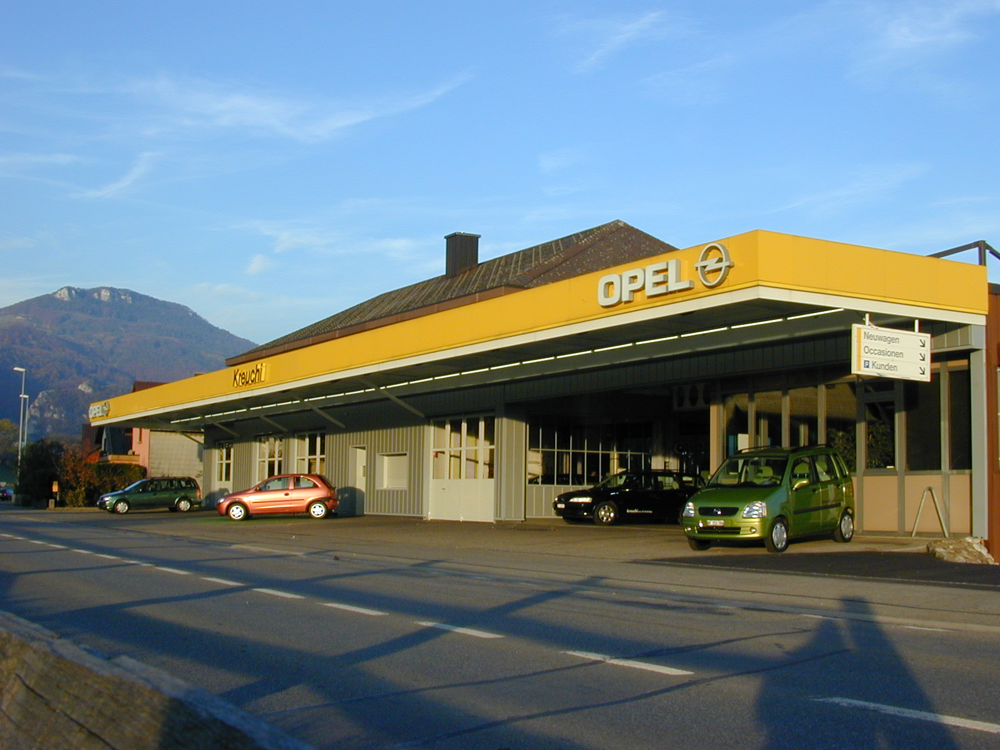
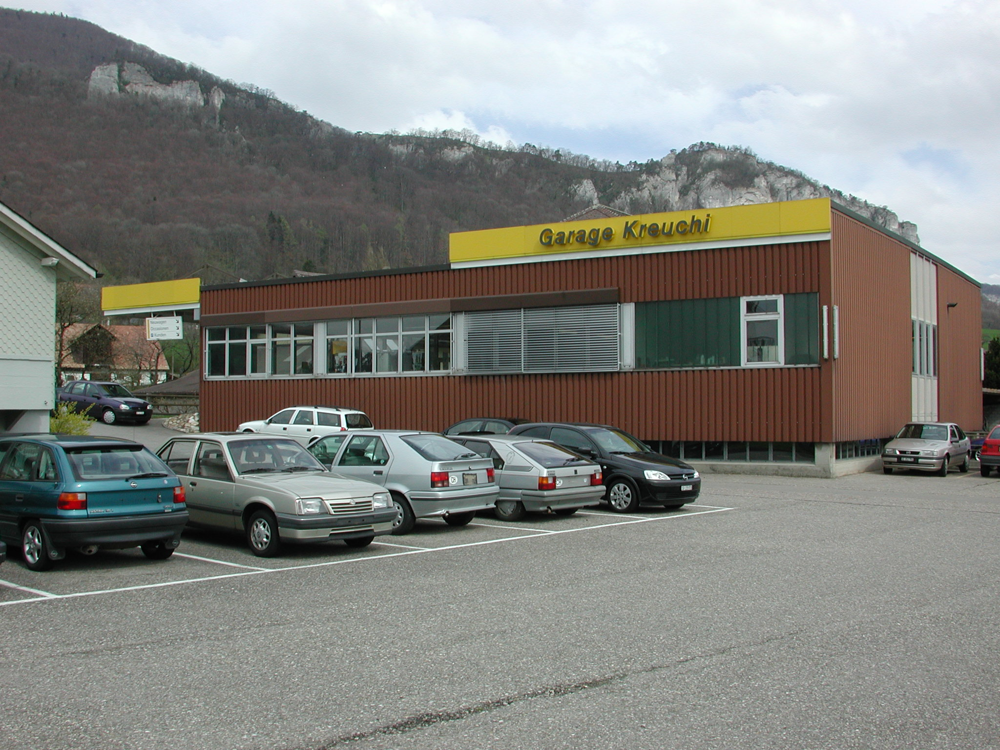
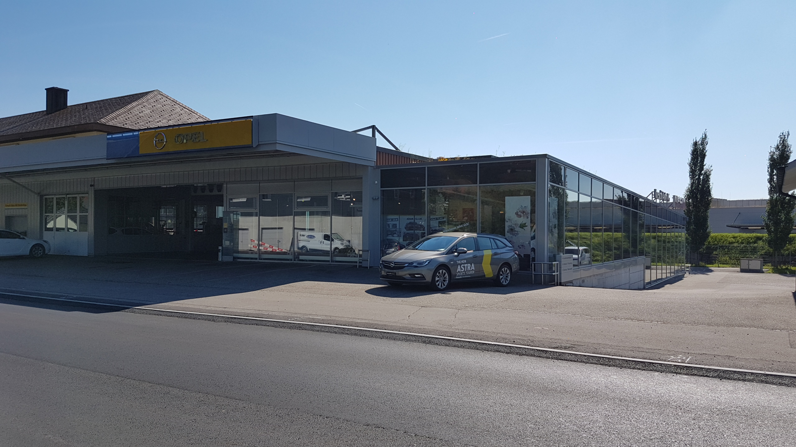
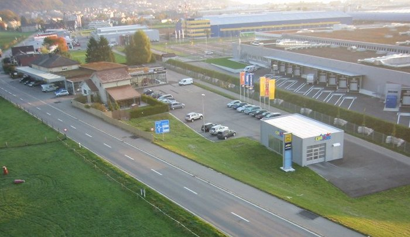

Service & Reparaturen
Wartung und Reparaturen für Personenwagen und Nutzfahrzeuge bis 3.5 Tonnen, markenübergreifend.
Familienbetrieb seit 1964
Garage, Verkauf, Service und Reparaturen in Niederbipp. Für Personenwagen und Nutzfahrzeuge bis 3.5 Tonnen, mit Nissan und Opel Kompetenz direkt an der Hauptstrasse.
Alles rund ums Auto
Die wichtigsten Leistungen sind direkt sichtbar: Service, Reparaturen, Reifen, Unfallhilfe, Fahrzeugverkauf, Waschanlage und Schlüsselservice.
Wartung und Reparaturen für Personenwagen und Nutzfahrzeuge bis 3.5 Tonnen, markenübergreifend.
Diagnose mit modernen Testgeräten, Abgaswartung, Klimaservice und Bereitstellung für die MFK.
Beratung, Wechsel und Offerten für Sommer- und Winterreifen inklusive Sicherheitsfokus.
Reparatur, Schadenabwicklung mit Versicherungen und Ersatzwagen, damit Sie mobil bleiben.
Lackschonende Rundum-Wäsche, auch für Lieferwagen bis 2.80 m Höhe und über 7 m Länge.
Autoschlüssel, Schlosszylinder, Oldtimer-Schlüssel und viele Haushaltsschlüssel direkt vor Ort.
Fahrzeugangebot
Vom Neuwagen bis zur Occasion: Kreuchi Auto AG verbindet Markenkompetenz mit der Nähe einer lokalen Vertrauensgarage.



Werkstatt
Die Werkstatt betreut Kunden in allen Fragen rund ums Auto. Dazu gehören technische Diagnose, Klimaanlagen, Lenkgeometrie, Abgaswartung, MFK-Bereitstellung und Reparaturen.
XXL CarWash-Center
Die Waschanlage wurde für lackschonende Reinigung mit Gelenkbürsten konzipiert. Besonders praktisch: Auch grössere Lieferwagen können gereinigt werden.

Schlüsselservice
Nach der Übernahme des Inventars von Auto-Schlüssel-Jetzer deckt Kreuchi Auto AG viele Kundenwünsche rund um Fahrzeug- und Haushaltsschlüssel ab.
Daewoo, Chevrolet, Ford, GM-US, Nissan und Opel.
Seit 2010 als offizieller Schlüsselhersteller von General Motors Europe anerkannt.Über uns
Der Familienbetrieb wurde laufend erweitert und wird in zweiter Generation weitergeführt. Die Website macht diese Geschichte kompakt sichtbar.
Start der Kreuchi Auto AG als lokaler Betrieb rund ums Auto.
Neubau von Werkstatt, Einstellhalle und Ersatzteillager.
Neuer Kundenempfangsraum mit Büro wird eröffnet.
Übergabe an Walter und Hanspeter Kreuchi in zweiter Generation.
Erweiterung durch den Auto-Schlüsselservice.
Garage, Fahrzeugverkauf, Werkstatt, Waschanlage und Schlüsselservice unter einem Dach.
Team
Die Mitarbeitenden bringen Wissen aus Geschäftsleitung, Administration, Werkstatt, Automobildiagnostik und Ausbildung zusammen.

Aktuell
Neue Fahrzeugmodelle, Spezialfahrzeuge und saisonale Kundennews können moderner eingebunden werden, ohne dass Besucher lange suchen müssen.
Kontakt
Kreuchi Auto AG ist direkt an der Hauptstrasse zwischen Niederbipp und Önsingen erreichbar, nahe der Autobahnausfahrten Niederbipp und Önsingen.